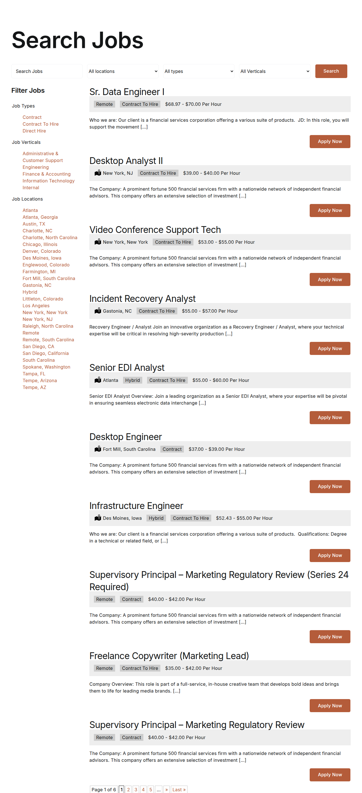

The job portal has many useful filters.
Start with the search-to-apply path. Trim mobile load, then make each filter, job detail, and Apply Now step easy to test.
Prepared for Michael Norton
A short brief for Associate Staffing on the public job portal, the delivery-manager signal, and the candidate trust points that can slow hiring.
We saw the Mid-Level Delivery Manager search tied to agile teams, product partners, risks, dependencies, and delivery metrics.
The Delivery Manager role says you are adding order to busy client and candidate work. It points to agile coaching, product and engineering partners, delivery metrics, risks, and dependencies. That usually means handoffs are getting harder as volume grows. Your public job portal already carries many technical roles across locations and contract types. If the workflow stays manual, recruiters spend more time chasing updates than moving strong people forward. The risk is not only speed; it is trust.
Start with the search-to-apply path. Trim mobile load, then make each filter, job detail, and Apply Now step easy to test.
Public comments mention pay and communication. Add pay-expectation and next-step checkpoints before the client-submit stage.

Run a six-week dedicated squad under your delivery owner. Keep the scope tight: job portal flow, delivery metrics, and release checks.
Trace source request to candidate submit, then mark handoffs that create rework for recruiters today.
Speed up mobile pages, clarify filters, and reduce resume steps that can block applies on phones.
Show active client roles, risks, candidate stage, and the next owner in one daily view.
Review each weekly release with recruiters and account leads, using live hiring work as proof.
Elinext is a full-cycle software development company, active since 1997, with about 700 in-house specialists and no freelancers. For this work, the useful part is the squad model: product, web, QA, and delivery people can join your owner. The company works under ISO 9001 and ISO 27001.
That mix fits a staffing portal where speed, trust, and data care all matter. We would use that same delivery habit on the pilot above.

Elinext built a modern job portal and expanded the feature set as the scope grew.
Read case study
A recruiting platform was integrated into an existing assessment system for North America.
Read case study